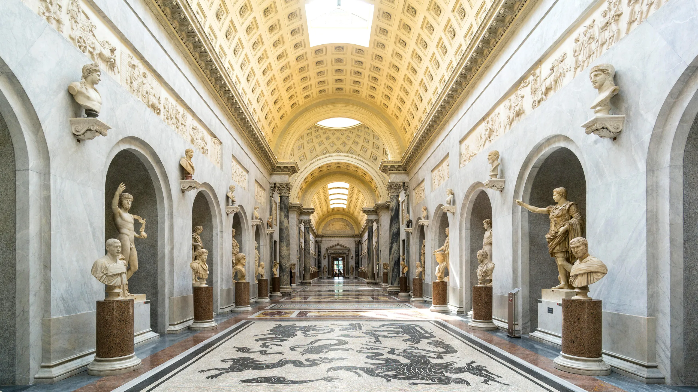
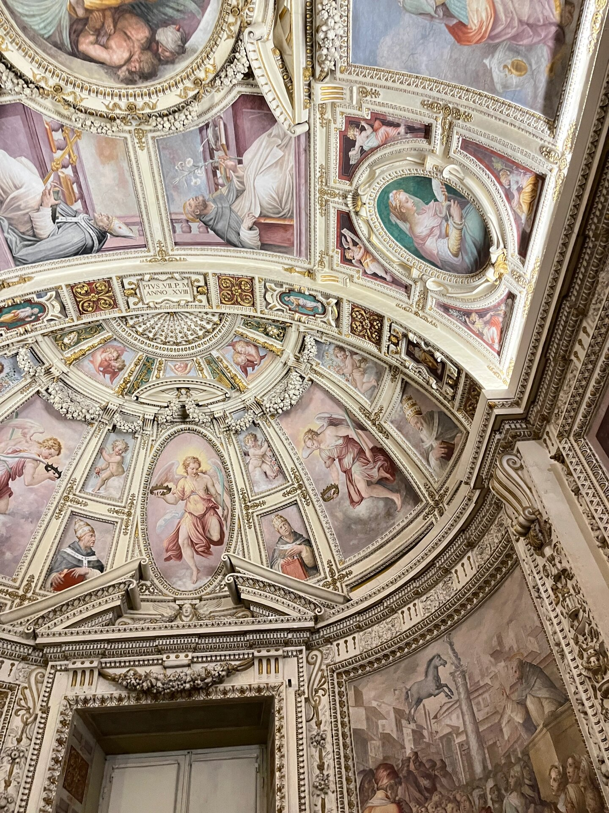
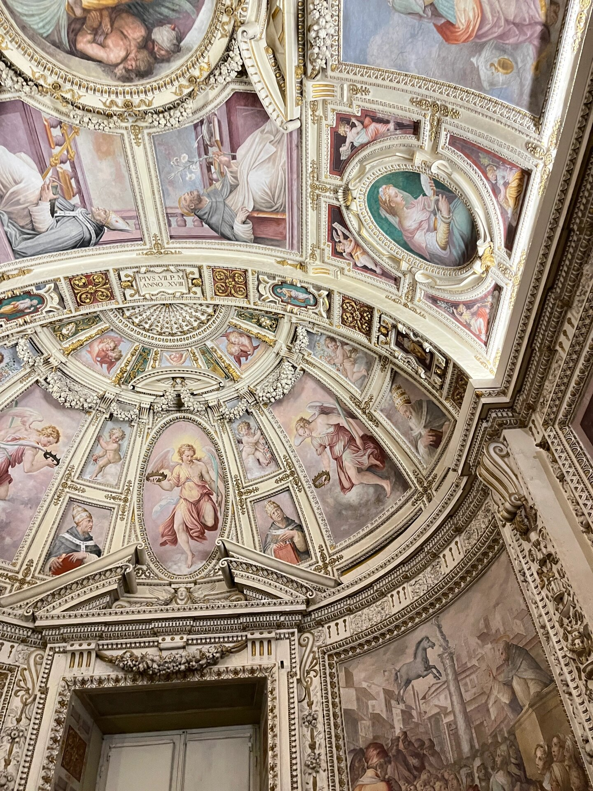
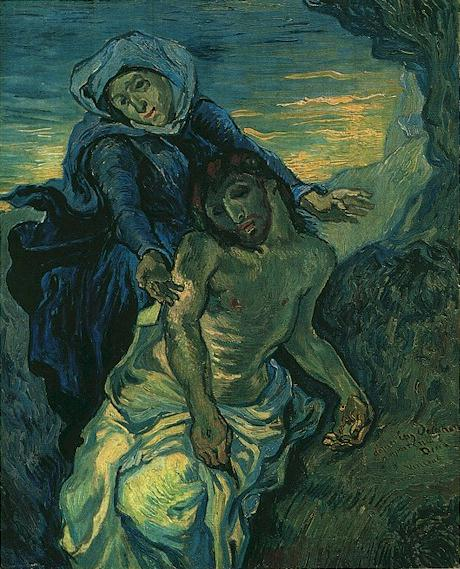
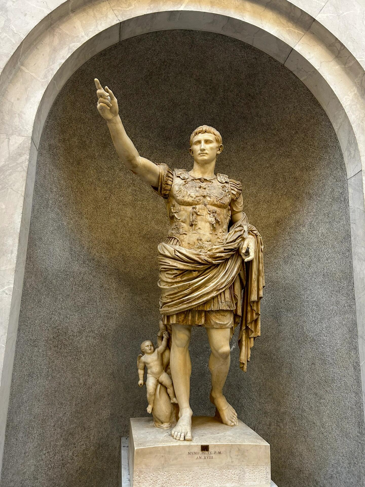
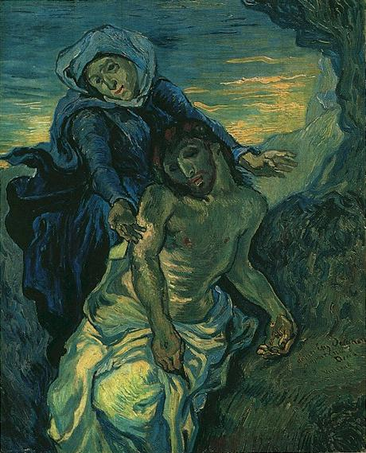
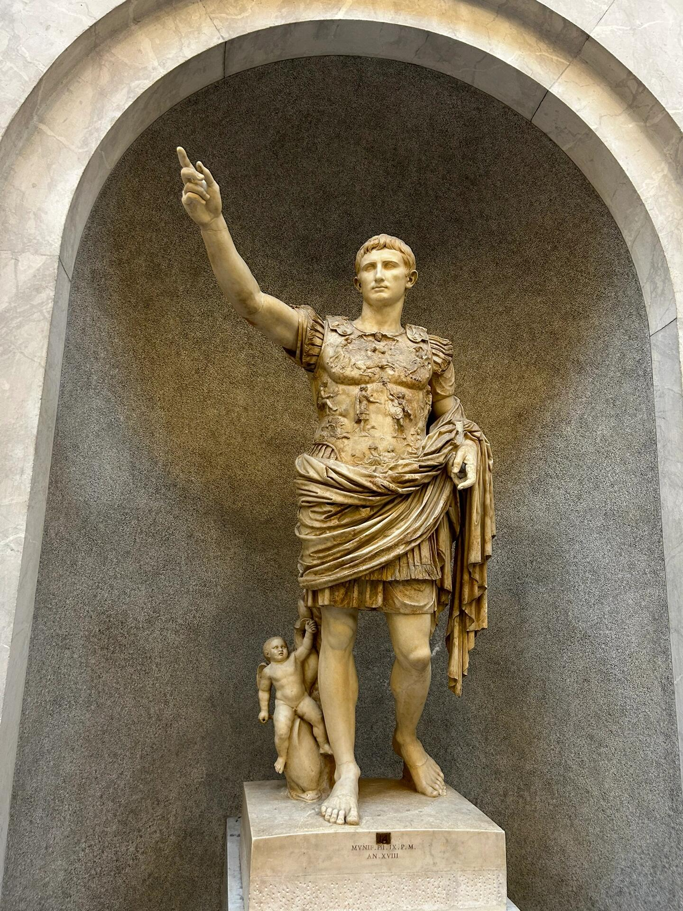
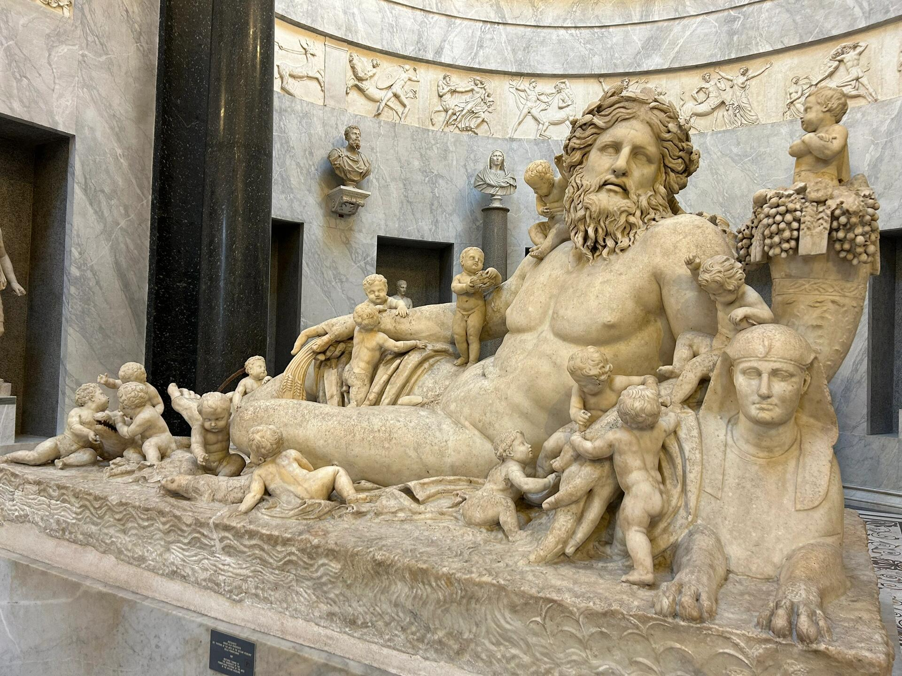
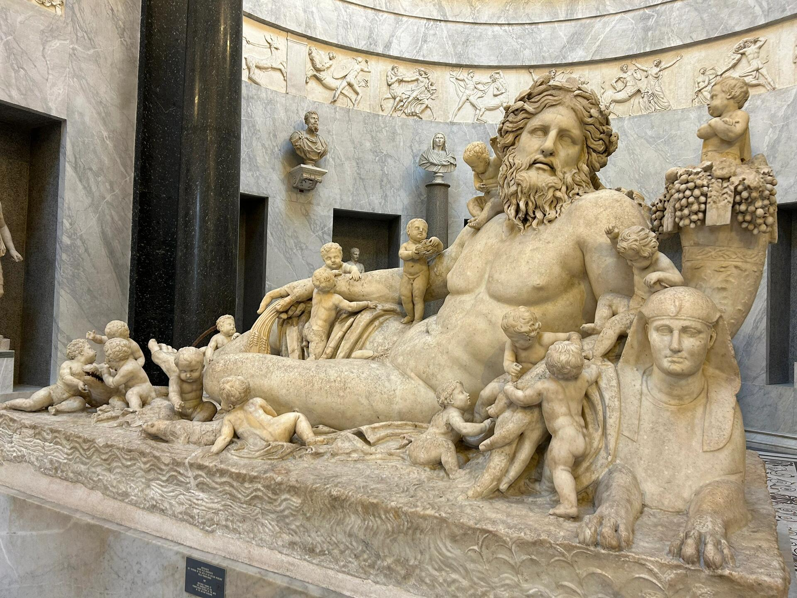

The Vatican
Scroll Down


The Vatican Museum
The Vatican Museums, located within the Vatican City State, represent one of the largest and most
significant collections of art and historical artifacts in the world. Founded by Pope Julius II in
the early 16th century, the museums trace their origins to 1506, when the Laocoön and His Sons
sculpture was discovered in a vineyard near the Basilica of Santa Maria Maggiore in Rome.
Recognizing the significance of the sculpture, Julius II acquired it, and it was placed on public
display in the Vatican a month later, marking the beginning of the Vatican Museums.
Over the centuries, successive popes expanded the collection through acquisitions, commissions, and
excavations, turning the Vatican into a center of art and culture. The museums now encompass several
pontifical galleries and museums, including the Pio-Clementino Museum, the Gregorian Egyptian
Museum, the Gregorian Etruscan Museum, the Raphael Rooms, the Pinacoteca (art gallery), and the
Ethnological Museum, among others. The collection spans from Egyptian and Etruscan artifacts to
Renaissance and Baroque art, encompassing a wide range of cultures and periods.
The Vatican Museums are also home to the Sistine Chapel, famous for Michelangelo's ceiling frescoes
and The Last Judgment, and the Raphael Rooms, decorated by Raphael and his workshop. These sites are
among the most visited and revered art spaces in the world, known for their artistic and historical
significance, as well as their spiritual importance to the Catholic Church.
The layout of the museums is a complex of galleries, chapels, and rooms that unfold in a meandering
journey through art and history, reflecting the growth of the collections over the centuries. The
museums' architecture itself, which includes works from the Renaissance and Baroque periods, is a
testament to the evolving styles and tastes of the times in which they were expanded or renovated.
Visiting the Vatican Museums offers a unique insight into the history of human civilization through
its art. The collections serve not only as a testament to the Catholic Church's role in the
preservation and promotion of art and culture but also as a bridge connecting diverse cultures and
epochs. The museums attract millions of visitors each year, drawn by the opportunity to see
unparalleled art collections and the architectural beauty of the Vatican itself.
The Vatican Museums continue to be a vital part of the Vatican's mission to preserve and display
works of art of great historical, cultural, and religious significance, making them a treasure trove
for historians, art lovers, and the general public alike.
Collections
 


 



 


Vatican City
the Centre of Christianity

Vatican City, officially known as the Vatican City State, is the smallest independent state in the world
by both area and population. Situated entirely within the city of Rome, Italy, it occupies approximately
44 hectares (about 110 acres) and has a population of around 800 residents. Despite its diminutive size,
Vatican City holds immense significance for the global Catholic community as the spiritual and
administrative center of the Roman Catholic Church and as the residence of the Pope, the leader of the
worldwide Catholic Church.
The origins of Vatican City trace back to the Roman Empire, but its modern status as a sovereign state
was established with the Lateran Treaty in 1929, an agreement signed by the Holy See and the Kingdom of
Italy. This treaty resolved the "Roman Question" by recognizing the full sovereignty of the Holy See in
the city-state and establishing its territorial distinctness from Italy.
Vatican City is renowned for its religious and cultural sites. Among its most famous landmarks is St.
Peter's Basilica, one of the largest churches in the world and a masterpiece of Renaissance
architecture, famously contributed to by architects such as Bramante, Michelangelo, and Bernini.
Adjacent to the Basilica is St. Peter's Square (Piazza San Pietro), an expansive plaza that welcomes
pilgrims and tourists from around the globe, especially for Papal audiences.
The Vatican Museums and the Sistine Chapel are other highlights within Vatican City. The Museums house
an extensive collection of art and historical artifacts accumulated by the Catholic Church over
centuries, including classical sculptures, Renaissance paintings, and Egyptian mummies. The Sistine
Chapel, with its ceiling and Last Judgment fresco painted by Michelangelo, is among the most celebrated
artistic achievements in the world.
Vatican City also encompasses the Vatican Gardens, a place of tranquility and meditation for popes since
the Renaissance, administrative buildings of the Holy See, the Vatican Library, and the Vatican
Observatory, one of the oldest astronomical research institutions in the world.
As a city-state, Vatican City operates with an independent judiciary, financial systems, and media
outlets, including L'Osservatore Romano, its newspaper, and Vatican Radio. The Swiss Guard, a small
force responsible for the safety of the Pope, is a recognizable symbol of Vatican City due to their
colorful Renaissance-era uniforms.
Despite its focus on spiritual leadership and governance of the Catholic Church, Vatican City exerts
considerable influence in international relations, humanitarian efforts, and cultural preservation. Its
unique status as a religious and sovereign entity allows it to host diplomatic representatives from
around the world and participate in international organizations.
In summary, Vatican City is a unique entity blending deep religious significance with rich cultural
heritage, making it a focal point for Catholics worldwide and a fascinating destination for visitors
interested in history, art, and architecture.